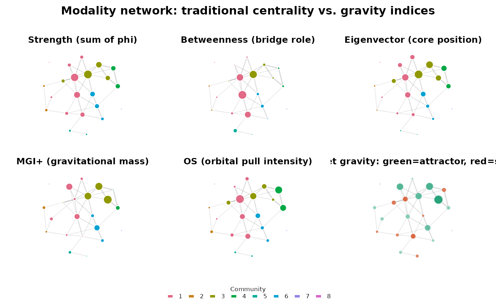

Plot gravity indices alongside traditional centrality for a catmodgraph
Source:R/gravity_plots.R
plot_gravity.RdProduces a 2 x 3 panel figure showing six structural measures for the same modality network on a shared layout: strength, betweenness, and eigenvector centrality (top row) alongside MGI+, OS, and dMGI (bottom row). Node size encodes the magnitude of each measure; colour encodes community membership (top row) or attractor/satellite role (dMGI panel).
Usage
plot_gravity(
x,
gravity = NULL,
layout_fn = igraph::layout_with_fr,
community_attr = "cluster",
palette = NULL,
seed = 1L,
title = "Modality network: traditional centrality vs. gravity indices",
node_size_range = c(4, 22),
show_labels = FALSE,
bars = FALSE,
bars_n = 12L,
attractor_col = "#1D9E75",
satellite_col = "#D85A30",
...
)Arguments
- x
A
catmodgraphobject.- gravity
A data frame returned by
modality_gravity. IfNULL(default),modality_gravity(x)is called internally.- layout_fn
An igraph layout function. Defaults to
igraph::layout_with_fr.- community_attr
Character. Vertex attribute name for community membership (set by
cluster_modalities). Defaults to"cluster".- palette
Character vector of colours for communities. If
NULL,grDevices::hcl.colorswith palette"Dark 3"is used.- seed
Integer. Random seed for reproducible layouts. Default
1L.- title
Character. Overall figure title. Default
"Modality network: traditional centrality vs. gravity indices".- node_size_range
Numeric vector of length 2. Minimum and maximum node sizes. Default
c(4, 22).- show_labels
Logical. Whether to draw node labels. Default
FALSE.- bars
Logical. If
TRUE, a second figure is produced showing a 2 x 3 bar chart panel with the topbars_nmodalities per measure, coloured by community. DefaultFALSE.- bars_n
Integer. Number of top modalities to show per bar chart panel when
bars = TRUE. Default12L.- attractor_col
Colour for attractor nodes in the dMGI panel. Default
"#1D9E75".- satellite_col
Colour for satellite nodes in the dMGI panel. Default
"#D85A30".- ...
Additional arguments passed to
modality_gravitywhengravity = NULL.
Value
Invisibly returns the gravity data frame used for
plotting. The primary effect is the figure drawn on the current
graphics device.
Examples
data(survey_health)
mg <- build_modality_graph(survey_health)
mg <- prune_modality_edges(mg, min_weight = 0.10, max_p = 0.05)
mg <- cluster_modalities(mg, method = "louvain")
plot_gravity(mg)
